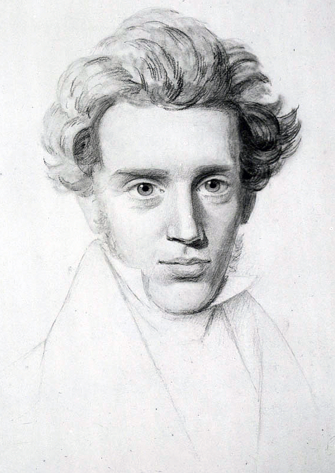

Kender du til flere kendte citater? Og ved du hvem der opdigtede dem? Hvad nu hvis du har taget fejl?
Velkommen til hjemmesiden om falske citater.

“Alle er genier, men hvis du bedømmer en fisk på dens evne til at klatre et træ vil den leve hele sit liv med den tro at den er dum.”
Albert Einstein sagde aldrig dette

“Vær opmærksom på et toms livs tomhed”
Sagde Socrates ikke.

“Tapperhed er hvad som kræves for at stå op og tale, tapperhed er også hvad der kræves for at sidde ned og lytte.”
Sagde Winston Churchill ikke.

“Hjertets renhed er at ville et.”
Sagde Søren Kierkegaard ikke.